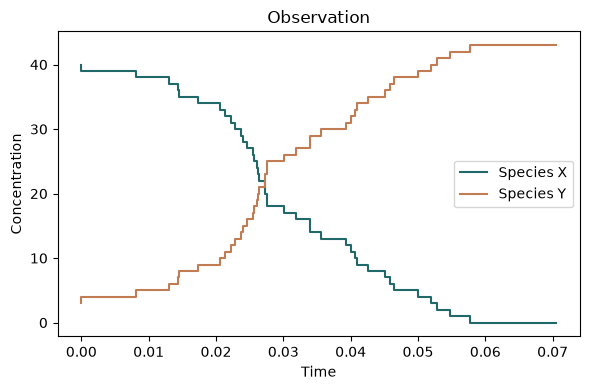
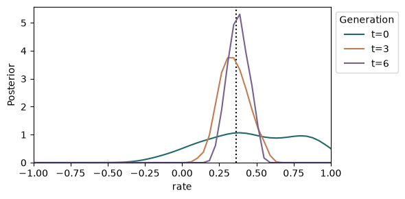
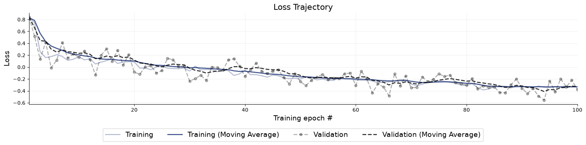
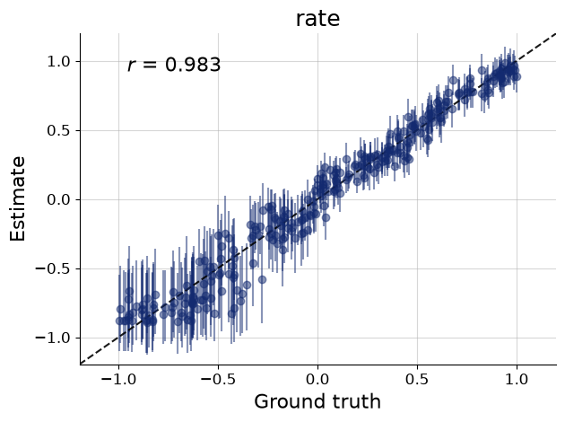
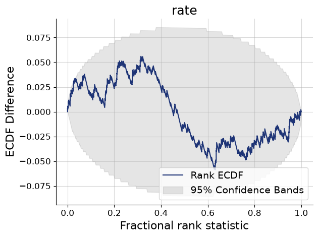
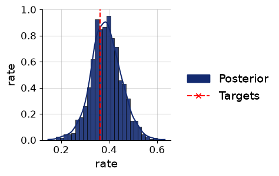
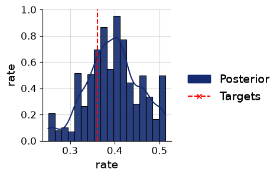
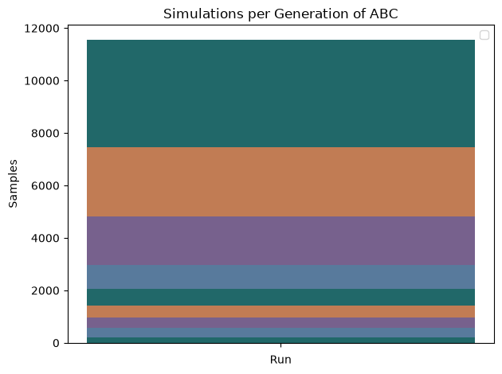

17. From ABC to BayesFlow#
Author: Jonas Arruda
We infer a reaction rate from stochastic chemical kinetics using ABC, then reuse the same simulator and prior in BayesFlow.
ABC fits one observed dataset at a time. It compares simulations with observations using a distance function. BayesFlow trains an estimator across the prior, so the trained estimator can analyze additional datasets without retraining. An adapter maps the simulator output to inference variables and conditions.
This example follows the pyABC chemical reaction tutorial. Install pyABC to run the first part. Readers familiar with ABC can skip to the BayesFlow workflow.
# Run once if needed: %pip install pyabc
import numpy as np
import matplotlib.pyplot as plt
import tempfile
from pathlib import Path
plt.rcParams["axes.prop_cycle"] = plt.cycler(color=["#216869", "#C17C54", "#77618D", "#587A9C"])
from pyabc import RV, Distribution, ABCSMC, weighted_statistics
from pyabc.sampler import SingleCoreSampler
from pyabc.visualization import plot_kde_1d, plot_sample_numbers
17.1. Simulator#
We consider a Markov jump process model \(m_1\) for conversion of (chemical) species \(X\) to species \(Y\):
The model is equipped with a single rate parameter \(k\). To simulate this model, we define a simple Gillespie simulator:
def helper(x, pre, c):
return (x**pre).prod(1) * c
def gillespie(x, c, pre, post, max_t):
"""
Gillespie forward simulation.
Parameters
----------
x: 1D array of size n_species
The initial numbers.
c: 1D array of size n_reactions
The reaction rates.
pre: array of size n_reactions x n_species
What is to be consumed.
post: array of size n_reactions x n_species
What is to be produced
max_t: int
Simulate up to time max_t
Returns
-------
t, X: 1d array, 2d array, with t: The time points. X: The history
of the species. ``X.shape == (t.size, x.size)``
"""
t = 0
t_store = [t]
x_store = [x.copy()]
S = post - pre
while t < max_t:
h_vec = helper(x, pre, c)
h0 = h_vec.sum()
if h0 == 0:
break
delta_t = np.random.exponential(1 / h0)
# no reaction can occur any more
if not np.isfinite(delta_t):
t_store.append(max_t)
x_store.append(x)
break
reaction = np.random.choice(c.size, p=h_vec / h0)
t = t + delta_t
x = x + S[reaction]
t_store.append(t)
x_store.append(x)
return np.array(t_store), np.array(x_store)
Next, we define the model in terms of the initial molecule numbers \(x_0\), an array pre which determines what is to be consumed (the LHS of the reaction equations) and an array post which determines what is to be produced (the RHS of the reaction equations). Further, we define that the simulation time should not exceed MAX_T seconds.
The simulation starts with initial concentrations \(X=40\) and \(Y=3\).
The reaction \(X + Y \rightarrow 2Y\) is encoded in pre = [[1, 1]] and post = [[0, 2]].
MAX_T = 0.1
class StochasticModel:
__name__ = "StochasticModel"
x0 = np.array([40, 3]) # Initial molecule numbers
pre = np.array([[1, 1]], dtype=int)
post = np.array([[0, 2]])
def __call__(self, par):
rate = np.array([np.power(10, par["rate"])])
t, X = gillespie(
self.x0, rate, self.pre, self.post, MAX_T
)
return {"t": t, "X": X}
Below, we draw one stochastic simulation from the model (the Observation) and visualize it:
true_rate = np.log10(2.3)
observations = StochasticModel()({"rate": true_rate})
fig, axes = plt.subplots(ncols=1, tight_layout=True, figsize=(6, 4))
axes.step(observations["t"], observations["X"])
axes.legend(["Species X", "Species Y"])
axes.set_xlabel("Time")
axes.set_ylabel("Concentration")
axes.set_title("Observation")
plt.show()

We observe that species \(X\) is converted into species \(Y\).
In pyABC, we need to define a distance function as \(L_1\) norm of two trajectories, evaluated at 20 time points. This is not needed for BayesFlow.
We only consider the concentration of species \(Y\) in the distance calculation and not every time point which we simulate is actually observed. In code, this translates to:
N_TEST_TIMES = 20
t_test_times = np.linspace(0, MAX_T, N_TEST_TIMES)
def distance(x, y):
xt_ind = np.searchsorted(x["t"], t_test_times, side="right") - 1
yt_ind = np.searchsorted(y["t"], t_test_times, side="right") - 1
error = (
np.absolute(x["X"][:, 1][xt_ind] - y["X"][:, 1][yt_ind]).sum()
/ t_test_times.size
)
return error
We choose a uniform prior over the interval \([-1, 1]\) in \(\log_{10}\) space for the single rate parameter. The two numbers passed to RV("uniform", ...) are the lower bound and interval width:
prior = Distribution(rate=RV("uniform", -1, 2))
We initialize ABCSMC with the same model, prior, and distance function. We use 200 particles per population and a single-core sampler to keep the example easy to run in a notebook. The observed data are the trajectory generated above.
abc = ABCSMC(
models=StochasticModel(),
parameter_priors=prior,
distance_function=distance,
population_size=200,
sampler=SingleCoreSampler(),
)
db_dir = tempfile.TemporaryDirectory()
abc.new("sqlite:///" + str(Path(db_dir.name) / "mjp.db"), observations);
ABC.History INFO: Start <ABCSMC id=1, start_time=2026-10-23 12:57:13>
abc_history = abc.run(minimum_epsilon=1.0, max_nr_populations=10)
ABC INFO: Calibration sample t = -1.
ABC INFO: t: 0, eps: 1.47500000e+01.
ABC INFO: Accepted: 200 / 384 = 5.2083e-01, ESS: 2.0000e+02.
ABC INFO: Timing t=0 [s]: total=0.207, simulation=0.138 (67%), pipeline-setup=0.00239, prepare-next=0.0145 (population-size=0.0062, distance=0.00108).
ABC INFO: t: 1, eps: 6.62500000e+00.
ABC INFO: Accepted: 200 / 372 = 5.3763e-01, ESS: 1.9701e+02.
ABC INFO: Timing t=1 [s]: total=0.385, simulation=0.257 (67%), pipeline-setup=0.00208, prepare-next=0.0146 (population-size=0.00647, distance=0.00129).
ABC INFO: t: 2, eps: 3.85000000e+00.
ABC INFO: Accepted: 200 / 479 = 4.1754e-01, ESS: 1.9704e+02.
ABC INFO: Timing t=2 [s]: total=0.38, simulation=0.315 (83%), pipeline-setup=0.00226, prepare-next=0.0137 (population-size=0.0062, distance=0.00123).
ABC INFO: t: 3, eps: 2.29645163e+00.
ABC INFO: Accepted: 200 / 619 = 3.2310e-01, ESS: 1.8488e+02.
ABC INFO: Timing t=3 [s]: total=0.444, simulation=0.392 (88%), pipeline-setup=0.00191, prepare-next=0.0132 (population-size=0.00544, distance=0.00116).
ABC INFO: t: 4, eps: 1.65000000e+00.
ABC INFO: Accepted: 200 / 920 = 2.1739e-01, ESS: 1.1356e+02.
ABC INFO: Timing t=4 [s]: total=0.684, simulation=0.568 (83%), pipeline-setup=0.00165, prepare-next=0.014 (population-size=0.00687, distance=0.00117).
ABC INFO: t: 5, eps: 1.35000000e+00.
ABC INFO: Accepted: 200 / 1836 = 1.0893e-01, ESS: 1.6897e+02.
ABC INFO: Timing t=5 [s]: total=1.16, simulation=1.09 (94%), pipeline-setup=0.00176, prepare-next=0.0153 (population-size=0.00701, distance=0.00127).
ABC INFO: t: 6, eps: 1.15000000e+00.
ABC INFO: Accepted: 200 / 2644 = 7.5643e-02, ESS: 1.8011e+02.
ABC INFO: Timing t=6 [s]: total=1.64, simulation=1.58 (97%), pipeline-setup=0.00223, prepare-next=0.0131 (population-size=0.00564, distance=0.00132).
ABC INFO: t: 7, eps: 1.00000000e+00.
ABC INFO: Accepted: 200 / 4089 = 4.8912e-02, ESS: 1.7034e+02.
ABC INFO: Timing t=7 [s]: total=2.44, simulation=2.38 (98%), pipeline-setup=0.002, prepare-next=0.0146 (population-size=0.00581, distance=0.00168).
ABC INFO: Stop: Minimum epsilon.
ABC.History INFO: Done <ABCSMC id=1, duration=0:00:07.520377, end_time=2026-10-23 12:57:21>
We then inspect the distribution of the rate parameter:
fig, axes = plt.subplots(1, tight_layout=True)
fig.set_size_inches((6, 3))
axes.axvline(true_rate, color="black", linestyle="dotted")
for t in range(0, abc_history.n_populations, 3):
df, w = abc_history.get_distribution(m=0, t=t)
plot_kde_1d(
df,
w,
"rate",
xmin=-1, xmax=1,
ax=axes,
label=f"t={t}",
)
axes.legend(title="Generation", loc="upper left", bbox_to_anchor=(1, 1))
plt.show()

We can see that the posterior distribution is centered around the true rate parameter value. So the ABC run was successful for this single dataset.
17.2. Transitioning to BayesFlow#
We let BayesFlow select the backend automatically.
import bayesflow as bf
INFO:bayesflow:Multiple Keras-compatible backends detected (JAX, PyTorch, TensorFlow). Defaulting to JAX.
To override, set the KERAS_BACKEND environment variable before importing bayesflow.
See: https://keras.io/getting_started/#configuring-your-backend
INFO:jax._src.xla_bridge:Unable to initialize backend 'tpu': INTERNAL: Failed to open libtpu.so: libtpu.so: cannot open shared object file: No such file or directory
INFO:bayesflow:Using backend 'jax'
We reuse the same prior and simulator in BayesFlow. The 20 observations of species \(Y\) become the inference conditions. In pyABC, we selected these observations inside the distance function.
sim = StochasticModel()
def prior_helper():
"""The ABC prior returns a Parameter Object from pyabc which we convert to a dict."""
return dict(rate=prior.rvs()["rate"])
def sim_helper(rate):
"""The simulator returns a dict, we extract the output at the test times."""
temp = sim({"rate": rate})
xt_ind = np.searchsorted(temp["t"], t_test_times, side="right") - 1
obs = temp["X"][:, 1][xt_ind]
return dict(obs=obs)
# We create a simulator from the helper functions
simulator = bf.make_simulator([prior_helper, sim_helper])
The workflow builds an adapter from inference_variables and inference_conditions. Here, the observations are already a small vector, so we do not need a summary network.
num_simulations = 2 ** 14
training_data = simulator.sample(num_simulations)
epochs = 100
batch_size = 64
We use a StableConsistencyModel as the inference network. The workflow standardizes both the rate parameter and the observations during training.
workflow = bf.BasicWorkflow(
simulator=simulator,
inference_variables="rate",
inference_conditions="obs",
inference_network=bf.networks.StableConsistencyModel(
subnet_kwargs={"widths": (128,)*3},
),
standardize="all",
initial_learning_rate=1e-3
)
Offline training reuses the same 16,384 simulations for 100 epochs. We simulate a separate set of 256 datasets for validation. The trained estimator can then infer the rate for many datasets without retraining.
history = workflow.fit_offline(
data=training_data,
epochs=epochs,
batch_size=batch_size,
validation_data=256,
verbose=2,
)
INFO:bayesflow:Fitting on dataset instance of OfflineDataset.
INFO:bayesflow:Building on a test batch.
Epoch 1/100
256/256 - 4s - 14ms/step - loss: 0.8308 - val_loss: 0.8413
Epoch 2/100
256/256 - 0s - 774us/step - loss: 0.7449 - val_loss: 0.5168
Epoch 3/100
256/256 - 0s - 816us/step - loss: 0.2574 - val_loss: 0.1331
Epoch 4/100
256/256 - 0s - 768us/step - loss: 0.1599 - val_loss: 0.4147
Epoch 5/100
256/256 - 0s - 758us/step - loss: 0.1748 - val_loss: -1.1376e-02
Epoch 6/100
256/256 - 0s - 767us/step - loss: 0.2091 - val_loss: 0.1164
Epoch 7/100
256/256 - 0s - 757us/step - loss: 0.1796 - val_loss: 0.4111
Epoch 8/100
256/256 - 0s - 757us/step - loss: 0.1125 - val_loss: 0.1505
Epoch 9/100
256/256 - 0s - 775us/step - loss: 0.1318 - val_loss: 0.2210
Epoch 10/100
256/256 - 0s - 797us/step - loss: 0.1733 - val_loss: 0.1654
Epoch 11/100
256/256 - 0s - 924us/step - loss: 0.1213 - val_loss: 0.2711
Epoch 12/100
256/256 - 0s - 780us/step - loss: 0.1382 - val_loss: 0.1252
Epoch 13/100
256/256 - 0s - 857us/step - loss: 0.0519 - val_loss: -1.3193e-01
Epoch 14/100
256/256 - 0s - 913us/step - loss: 0.0825 - val_loss: 0.1974
Epoch 15/100
256/256 - 0s - 882us/step - loss: 0.1091 - val_loss: 0.3057
Epoch 16/100
256/256 - 0s - 842us/step - loss: 0.1386 - val_loss: 0.0987
Epoch 17/100
256/256 - 0s - 844us/step - loss: 0.0605 - val_loss: 0.2814
Epoch 18/100
256/256 - 0s - 839us/step - loss: 0.0862 - val_loss: 0.0353
Epoch 19/100
256/256 - 0s - 810us/step - loss: 0.0897 - val_loss: 0.2106
Epoch 20/100
256/256 - 0s - 808us/step - loss: 0.0873 - val_loss: -8.5136e-02
Epoch 21/100
256/256 - 0s - 817us/step - loss: -1.7064e-02 - val_loss: -1.2026e-01
Epoch 22/100
256/256 - 0s - 838us/step - loss: -1.4367e-02 - val_loss: 0.0046
Epoch 23/100
256/256 - 0s - 833us/step - loss: -4.4439e-02 - val_loss: 0.0232
Epoch 24/100
256/256 - 0s - 799us/step - loss: 0.0013 - val_loss: -1.0140e-01
Epoch 25/100
256/256 - 0s - 812us/step - loss: 0.0143 - val_loss: -5.8642e-02
Epoch 26/100
256/256 - 0s - 799us/step - loss: -1.7727e-02 - val_loss: 0.1452
Epoch 27/100
256/256 - 0s - 820us/step - loss: -2.4493e-02 - val_loss: 0.1226
Epoch 28/100
256/256 - 0s - 839us/step - loss: -2.7799e-02 - val_loss: 0.0088
Epoch 29/100
256/256 - 0s - 825us/step - loss: -1.6460e-02 - val_loss: 0.0170
Epoch 30/100
256/256 - 0s - 829us/step - loss: -6.6154e-02 - val_loss: -2.3593e-01
Epoch 31/100
256/256 - 0s - 848us/step - loss: 0.0151 - val_loss: -1.9559e-01
Epoch 32/100
256/256 - 0s - 838us/step - loss: -4.7425e-02 - val_loss: -1.3674e-01
Epoch 33/100
256/256 - 0s - 756us/step - loss: -3.9527e-02 - val_loss: -2.2441e-01
Epoch 34/100
256/256 - 0s - 783us/step - loss: -4.1447e-02 - val_loss: 7.8928e-04
Epoch 35/100
256/256 - 0s - 808us/step - loss: -7.9101e-02 - val_loss: -9.4258e-03
Epoch 36/100
256/256 - 0s - 832us/step - loss: -5.1248e-02 - val_loss: -5.2661e-02
Epoch 37/100
256/256 - 0s - 844us/step - loss: -6.1778e-02 - val_loss: 0.1218
Epoch 38/100
256/256 - 0s - 890us/step - loss: -1.4178e-01 - val_loss: 0.1394
Epoch 39/100
256/256 - 0s - 851us/step - loss: -1.1472e-01 - val_loss: 0.0152
Epoch 40/100
256/256 - 0s - 791us/step - loss: -5.1220e-02 - val_loss: -1.5656e-01
Epoch 41/100
256/256 - 0s - 785us/step - loss: -1.2798e-01 - val_loss: -4.3144e-02
Epoch 42/100
256/256 - 0s - 783us/step - loss: -1.2666e-01 - val_loss: 0.0655
Epoch 43/100
256/256 - 0s - 806us/step - loss: -1.4579e-01 - val_loss: -6.9625e-02
Epoch 44/100
256/256 - 0s - 835us/step - loss: -1.6922e-01 - val_loss: -1.0522e-01
Epoch 45/100
256/256 - 0s - 823us/step - loss: -1.3460e-01 - val_loss: -7.1752e-02
Epoch 46/100
256/256 - 0s - 825us/step - loss: -1.4576e-01 - val_loss: -4.7627e-02
Epoch 47/100
256/256 - 0s - 795us/step - loss: -1.8069e-01 - val_loss: -1.7443e-01
Epoch 48/100
256/256 - 0s - 818us/step - loss: -1.9508e-01 - val_loss: -2.8478e-01
Epoch 49/100
256/256 - 0s - 859us/step - loss: -1.8603e-01 - val_loss: -1.0997e-01
Epoch 50/100
256/256 - 0s - 828us/step - loss: -2.0263e-01 - val_loss: -2.4530e-01
Epoch 51/100
256/256 - 0s - 782us/step - loss: -1.6425e-01 - val_loss: -3.1135e-01
Epoch 52/100
256/256 - 0s - 817us/step - loss: -1.8400e-01 - val_loss: -2.2131e-01
Epoch 53/100
256/256 - 0s - 842us/step - loss: -2.1569e-01 - val_loss: -1.6648e-01
Epoch 54/100
256/256 - 0s - 968us/step - loss: -2.0084e-01 - val_loss: -1.2337e-01
Epoch 55/100
256/256 - 0s - 843us/step - loss: -2.2333e-01 - val_loss: -2.1314e-01
Epoch 56/100
256/256 - 0s - 838us/step - loss: -2.2497e-01 - val_loss: -1.8655e-01
Epoch 57/100
256/256 - 0s - 832us/step - loss: -1.7608e-01 - val_loss: -1.9376e-01
Epoch 58/100
256/256 - 0s - 852us/step - loss: -2.0013e-01 - val_loss: -1.1150e-01
Epoch 59/100
256/256 - 0s - 808us/step - loss: -2.0175e-01 - val_loss: -1.0222e-01
Epoch 60/100
256/256 - 0s - 819us/step - loss: -2.1624e-01 - val_loss: -3.0738e-01
Epoch 61/100
256/256 - 0s - 793us/step - loss: -2.2254e-01 - val_loss: -6.9157e-02
Epoch 62/100
256/256 - 0s - 819us/step - loss: -2.1894e-01 - val_loss: -2.0092e-01
Epoch 63/100
256/256 - 0s - 808us/step - loss: -2.3355e-01 - val_loss: -4.3529e-01
Epoch 64/100
256/256 - 0s - 795us/step - loss: -2.6478e-01 - val_loss: -2.8005e-01
Epoch 65/100
256/256 - 0s - 787us/step - loss: -2.5369e-01 - val_loss: -3.3658e-01
Epoch 66/100
256/256 - 0s - 799us/step - loss: -2.4852e-01 - val_loss: -4.8263e-01
Epoch 67/100
256/256 - 0s - 806us/step - loss: -2.3363e-01 - val_loss: -1.1262e-01
Epoch 68/100
256/256 - 0s - 840us/step - loss: -2.0909e-01 - val_loss: -3.1851e-01
Epoch 69/100
256/256 - 0s - 864us/step - loss: -2.1638e-01 - val_loss: -1.4754e-01
Epoch 70/100
256/256 - 0s - 817us/step - loss: -2.8597e-01 - val_loss: -3.4728e-01
Epoch 71/100
256/256 - 0s - 832us/step - loss: -3.1242e-01 - val_loss: -3.4310e-01
Epoch 72/100
256/256 - 0s - 849us/step - loss: -2.8868e-01 - val_loss: -1.6597e-01
Epoch 73/100
256/256 - 0s - 840us/step - loss: -2.6083e-01 - val_loss: -2.4214e-01
Epoch 74/100
256/256 - 0s - 861us/step - loss: -2.2754e-01 - val_loss: -2.0446e-01
Epoch 75/100
256/256 - 0s - 853us/step - loss: -2.3321e-01 - val_loss: -1.1498e-01
Epoch 76/100
256/256 - 0s - 815us/step - loss: -2.4049e-01 - val_loss: -1.5858e-01
Epoch 77/100
256/256 - 0s - 793us/step - loss: -2.5602e-01 - val_loss: -1.3474e-01
Epoch 78/100
256/256 - 0s - 763us/step - loss: -2.7351e-01 - val_loss: -2.5998e-01
Epoch 79/100
256/256 - 0s - 772us/step - loss: -3.0239e-01 - val_loss: -2.8100e-01
Epoch 80/100
256/256 - 0s - 785us/step - loss: -3.1095e-01 - val_loss: -3.0211e-01
Epoch 81/100
256/256 - 0s - 766us/step - loss: -2.7705e-01 - val_loss: -1.9351e-01
Epoch 82/100
256/256 - 0s - 777us/step - loss: -3.4709e-01 - val_loss: -3.6628e-01
Epoch 83/100
256/256 - 0s - 978us/step - loss: -3.8338e-01 - val_loss: -3.1405e-01
Epoch 84/100
256/256 - 0s - 781us/step - loss: -3.6869e-01 - val_loss: -3.4195e-01
Epoch 85/100
256/256 - 0s - 774us/step - loss: -3.3370e-01 - val_loss: -3.3353e-01
Epoch 86/100
256/256 - 0s - 786us/step - loss: -3.3100e-01 - val_loss: -4.2975e-01
Epoch 87/100
256/256 - 0s - 770us/step - loss: -3.3503e-01 - val_loss: -4.3107e-01
Epoch 88/100
256/256 - 0s - 768us/step - loss: -3.5179e-01 - val_loss: -2.9990e-01
Epoch 89/100
256/256 - 0s - 783us/step - loss: -3.1862e-01 - val_loss: -2.0089e-01
Epoch 90/100
256/256 - 0s - 798us/step - loss: -3.2323e-01 - val_loss: -3.5884e-01
Epoch 91/100
256/256 - 0s - 792us/step - loss: -3.3864e-01 - val_loss: -4.4364e-01
Epoch 92/100
256/256 - 0s - 821us/step - loss: -3.4524e-01 - val_loss: -3.5966e-01
Epoch 93/100
256/256 - 0s - 838us/step - loss: -3.1954e-01 - val_loss: -4.8760e-01
Epoch 94/100
256/256 - 0s - 818us/step - loss: -3.3983e-01 - val_loss: -5.5466e-01
Epoch 95/100
256/256 - 0s - 769us/step - loss: -3.4063e-01 - val_loss: -2.3343e-01
Epoch 96/100
256/256 - 0s - 967us/step - loss: -3.2509e-01 - val_loss: -4.1806e-01
Epoch 97/100
256/256 - 0s - 791us/step - loss: -3.3911e-01 - val_loss: -1.9683e-01
Epoch 98/100
256/256 - 0s - 854us/step - loss: -3.1924e-01 - val_loss: -3.3262e-01
Epoch 99/100
256/256 - 0s - 807us/step - loss: -3.3532e-01 - val_loss: -2.2082e-01
Epoch 100/100
256/256 - 0s - 806us/step - loss: -3.3093e-01 - val_loss: -3.7551e-01
INFO:bayesflow:Training completed in 25.96 seconds.
f = bf.diagnostics.loss(history)

17.3. Validation Phase#
Check parameter recovery and simulation-based calibration on simulations not used for training. These diagnostics are inexpensive after amortized training. With ABC, we would need a separate fit for each validation dataset.
# Set the number of posterior draws you want to get
num_samples = 1000
# Simulate 300 scenarios and extract simulations and ground truth parameters
test_sims = workflow.simulate(300)
test_sims_params = {k: v for k, v in test_sims.items() if k in prior.keys()}
test_sims_data = {k: v for k, v in test_sims.items() if k not in prior.keys()}
# Obtain 1000 samples
samples = workflow.sample(conditions=test_sims_data, num_samples=num_samples)
INFO:bayesflow:Sampling completed in 5.71 seconds.
f = bf.diagnostics.recovery(samples, test_sims_params)

f = bf.diagnostics.calibration_ecdf(samples, test_sims_params, difference=True)

17.4. Inference Phase#
We now compare the BayesFlow and ABC posteriors for the observed trajectory. Both are approximations: ABC depends on its distance tolerance, and BayesFlow depends on training. Agreement between them is useful, but it does not replace the recovery and calibration checks above.
# We bring the observation into the right format
xt_ind = np.searchsorted(observations["t"], t_test_times, side="right") - 1
obs = observations["X"][:, 1][xt_ind]
# Obtain 1000 posterior samples
samples = workflow.sample(conditions={"obs": obs[None, :]}, num_samples=num_samples)
INFO:bayesflow:Sampling completed in 3.96 seconds.
f = bf.diagnostics.pairs_posterior(samples, targets=np.array([true_rate]))

# abc gives us weighted samples, we resample them to get comparable samples
df, w = abc_history.get_distribution()
abc_samples = weighted_statistics.resample(df["rate"].values, w, 1000)
f = bf.diagnostics.pairs_posterior({"rate": abc_samples}, targets=np.array([true_rate]))

Compare the simulation budgets below. BayesFlow uses 16,384 training simulations, plus 256 for validation and 300 for the diagnostics above. Repeating training epochs adds no simulations. ABC fits this one dataset, while BayesFlow’s training cost is shared across every dataset we analyze with the trained estimator.
print(f"BayesFlow training simulations: {num_simulations}")
print(f"Number of simulations in ABC: {abc_history.total_nr_simulations}")
ax = plot_sample_numbers(abc_history)
ax.legend([])
ax.set_title("Simulations per Generation of ABC")
plt.show()
BayesFlow training simulations: 16384
Number of simulations in ABC: 11543

For higher-dimensional observations, we can train a summary network jointly with the inference network. The same workflow then learns both how to summarize the data and how to infer the parameters.